Free study resources
Cheat Sheets
Focused summaries of the topics exams test most, checked against current guidelines. Each one prints on a single page.
86 cheat sheets2 exam guides1,800+ linked practice questionsUpdated Nov 2026
Exam guides
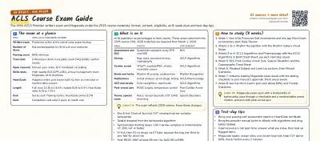
ACLS Course Exam GuideThe AHA ACLS Provider written exam and Megacode under the 2025 course materials: format, content, eligibility, an 8-week plan and test-day tips551 questionsChecked Oct 2026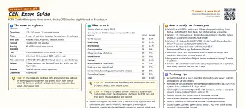
CEN Exam GuideBCEN Certified Emergency Nurse: format, the July 2026 outline, eligibility and an 8-week plan1,460 questionsChecked Oct 2026
Clinical Judgment & Management
Fundamentals & Safety
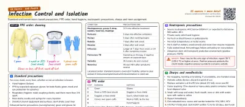
Infection Control and IsolationStandard and transmission-based precautions, PPE order, hand hygiene, neutropenic precautions, sharps and room assignmentChecked Oct 2026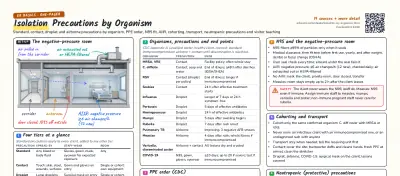
Isolation Precautions by OrganismStandard, contact, droplet and airborne precautions by organism, PPE order, N95 fit, AIIR, cohorting, transport, neutropenic precautions and visitor teachingChecked Oct 2026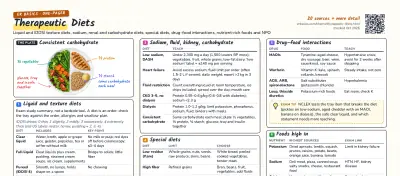
Therapeutic DietsLiquid and IDDSI texture diets, sodium, renal and carbohydrate diets, special diets, drug–food interactions, nutrient-rich foods and NPOChecked Oct 2026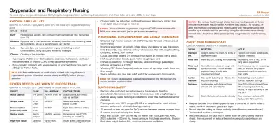
Oxygenation and Respiratory NursingHypoxia signs, oxygen devices and SpO₂ targets, lung expansion, suctioning, tracheostomy and chest tube care, and ABGs in four stepsChecked Oct 2026
Conditions & Basic Care
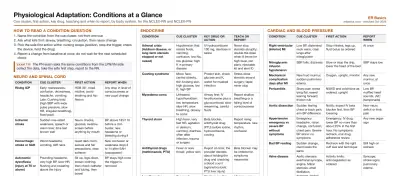
Physiological Adaptation: Conditions at a GlanceCue cluster, first action, key drug, teaching and when to report, by body system, for the NCLEX-RN and NCLEX-PNChecked Oct 2026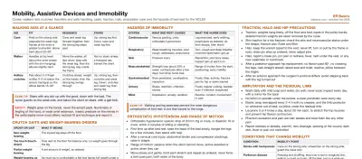
Mobility, Assistive Devices and ImmobilityCanes, walkers and crutches, transfers and safe handling, casts, traction, halo, amputation care and the hazards of bed rest for the NCLEXChecked Oct 2026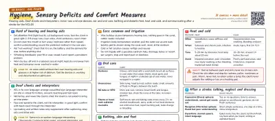
Hygiene, Sensory Deficits and Comfort MeasuresHearing aids, Deaf clients and interpreters, vision loss and eye devices, ear and oral care, bathing and diabetic feet, heat and cold, and communicating after a stroke for the NCLEXChecked Oct 2026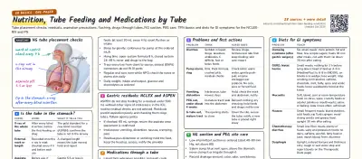
Nutrition, Tube Feeding and Medications by TubeTube placement checks, residuals, aspiration precautions, flushing, drugs through tubes, NG suction, PEG care, TPN basics and diets for GI symptoms for the NCLEX-RN and PNChecked Oct 2026
Pharmacology
Psychosocial & Legal
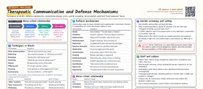
Therapeutic Communication and Defense MechanismsTechniques vs blocks, defense mechanisms, relationship phases, crisis, suicide screening, de-escalation, grief and “best response” itemsChecked Oct 2026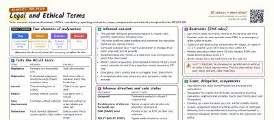
Legal and Ethical TermsTorts, consent, advance directives, HIPAA, mandatory reporting, restraints, scope, assignments and ethical principles for the NCLEX-RN7 questionsChecked Oct 2026
Cardiovascular & Hemodynamics
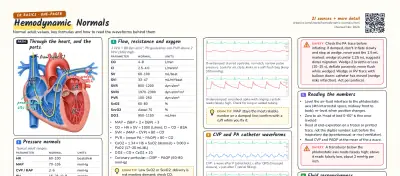
Hemodynamic NormalsNormal adult values, key formulas and how to read the waveforms behind themChecked Nov 2026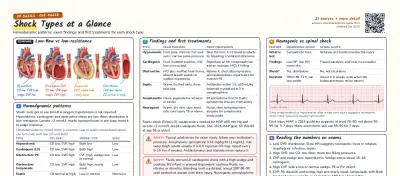
Shock Types at a GlanceHemodynamic patterns, exam findings and first treatments for each shock type18 questionsChecked Oct 2026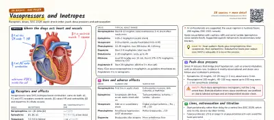
Vasopressors and InotropesReceptors, doses, SSC 2026 septic shock order, push-dose pressors and extravasation15 questionsChecked Nov 2026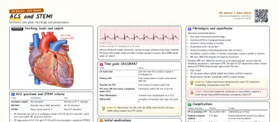
ACS and STEMITerritories, time goals, first drugs and complications56 questionsChecked Nov 2026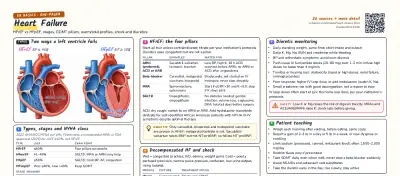
Heart FailureHFrEF vs HFpEF, stages, GDMT pillars, warm/cold profiles, shock and diuretics6 questionsChecked Oct 2026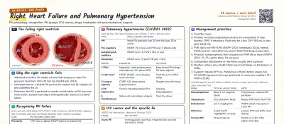
Right Heart Failure and Pulmonary HypertensionRV physiology, recognition, PH groups, ICU causes, drugs, intubation risk and mechanical supportChecked Oct 2026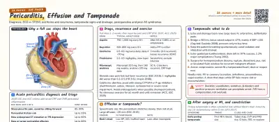
Pericarditis, Effusion and TamponadeDiagnosis, ECG vs STEMI, colchicine and recurrence, tamponade signs and drainage, postoperative and post-MI syndromes7 questionsChecked Oct 2026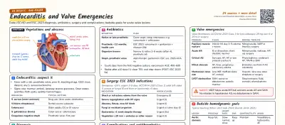
Endocarditis and Valve EmergenciesDuke-ISCVID and ESC 2023 diagnosis, antibiotics, surgery and complications; bedside goals for acute valve lesions13 questionsChecked Oct 2026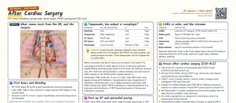
After Cardiac SurgeryCSC focus: bleeding, tamponade, shock states, POAF, pacing and CSU-ALS6 questionsChecked Oct 2026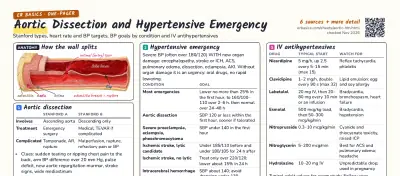
Aortic Dissection and Hypertensive EmergencyStanford types, heart rate and BP targets, BP goals by condition and IV antihypertensives18 questionsChecked Nov 2026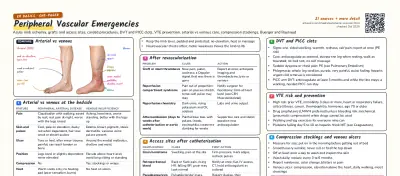
Peripheral Vascular EmergenciesAcute limb ischemia, grafts and access sites, carotid procedures, DVT and PICC clots, VTE prevention, arterial vs venous care, compression stockings, Buerger and Raynaud8 questionsChecked Oct 2026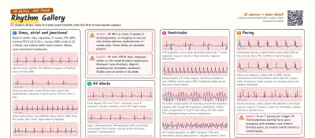
Rhythm Gallery21 drawn strips: how to name each rhythm and the first move exams expect74 questionsChecked Oct 2026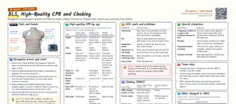
BLS, High-Quality CPR and ChokingRecognition, compressions, breaths and AED for adults, children and infants, choking relief, special cases and team roles (2025)68 questionsChecked Nov 2026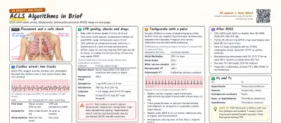
ACLS Algorithms in Brief2025 AHA adult arrest, bradycardia, tachycardia and post-ROSC steps on one page201 questionsChecked Nov 2026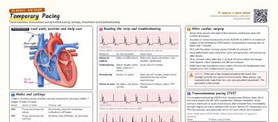
Temporary PacingTranscutaneous, transvenous and epicardial pacing: settings, thresholds and troubleshooting5 questionsChecked Oct 2026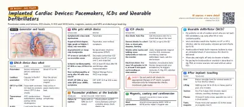
Implanted Cardiac Devices: Pacemakers, ICDs and Wearable DefibrillatorsPacemaker codes and failures, ICD shocks, S-ICD and WCD limits, magnets, cautery and MRI, and discharge teachingChecked Oct 2026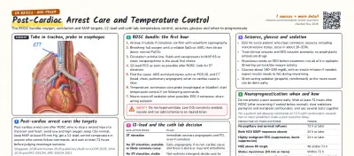
Post-Cardiac Arrest Care and Temperature ControlThe ROSC bundle: oxygen, ventilation and MAP targets, 12-lead and cath lab, temperature control, seizures, glucose and when to prognosticate31 questionsChecked Nov 2026
Mechanical Circulatory Support
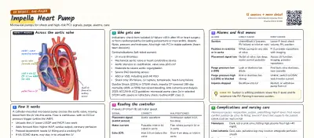
Impella Heart PumpMicroaxial pumps for shock and high-risk PCI: signals, purge, alarms, careChecked Oct 2026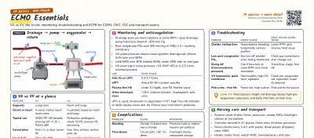
ECMO EssentialsVA vs VV, the circuit, monitoring, troubleshooting and ECPR for CCRN, CMC, CSC and transport examsChecked Nov 2026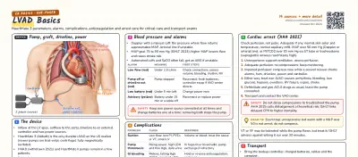
LVAD BasicsHeartMate 3 parameters, alarms, complications, anticoagulation and arrest care for critical care and transport exams12 questionsChecked Oct 2026
Respiratory & Airway
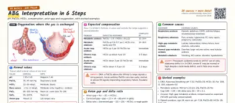
ABG Interpretation in 6 StepspH, PaCO₂, HCO₃⁻, compensation, anion gap and oxygenation, with worked examples19 questionsChecked Oct 2026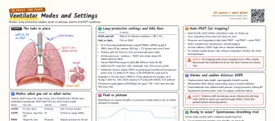
Ventilator Modes and SettingsModes, lung-protective targets, peak vs plateau, alarms and SBT readiness14 questionsChecked Nov 2026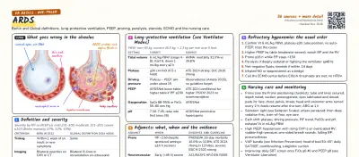
ARDSBerlin and Global definitions, lung-protective ventilation, PEEP, proning, paralysis, steroids, ECMO and the nursing careChecked Nov 2026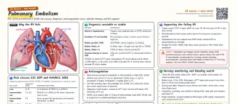
Pulmonary EmbolismESC 2019 and AHA/ACC 2026 risk classes, diagnosis, anticoagulation, lysis, catheter therapy and RV support27 questionsChecked Nov 2026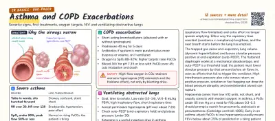
Asthma and COPD ExacerbationsSeverity signs, first treatments, oxygen targets, NIV and ventilating obstructive lungs6 questionsChecked Nov 2026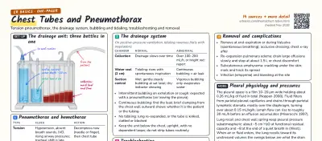
Chest Tubes and PneumothoraxTension pneumothorax, the drainage system, bubbling and tidaling, troubleshooting and removalChecked Nov 2026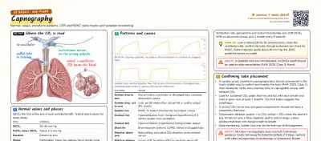
CapnographyNormal values, waveform patterns, CPR and ROSC, tube checks and sedation monitoring15 questionsChecked Oct 2026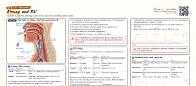
Airway and RSIAssessment, adjuncts, RSI drugs, failed airway, tube checks, DOPE, pediatric tubes26 questionsChecked Nov 2026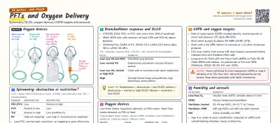
PFTs and Oxygen DeliverySpirometry, DLCO, oxygen devices, COPD targets and aerosolsChecked Nov 2026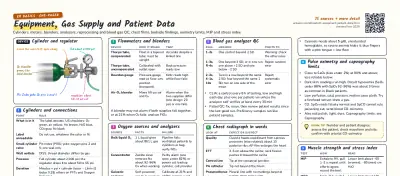
Equipment, Gas Supply and Patient DataCylinders, meters, blenders, analyzers, reprocessing and blood gas QC; chest films, bedside findings, oximetry limits, MIP and stress indexChecked Nov 2026
Sepsis, Renal & Metabolic
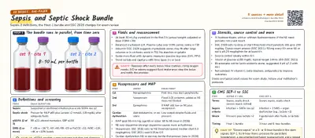
Sepsis and Septic Shock BundleSepsis-3 definitions, the Hour-1 bundle and SSC 2026 changes for exam review21 questionsChecked Oct 2026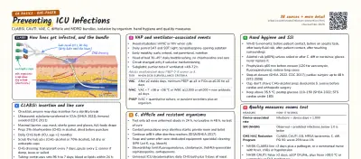
Preventing ICU InfectionsCLABSI, CAUTI, VAE, C. difficile and MDRO bundles, isolation by organism, hand hygiene and quality measures8 questionsChecked Nov 2026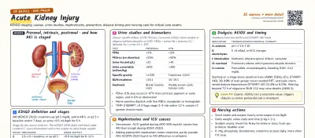
Acute Kidney InjuryKDIGO staging, causes, urine studies, nephrotoxins, prevention, dialysis timing and nursing care for critical care exams5 questionsChecked Oct 2026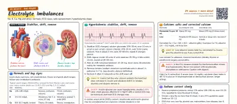
Electrolyte ImbalancesNa, K, Ca, Mg and phos: normals, ECG clues, safe replacement, hyperkalemia steps41 questionsChecked Oct 2026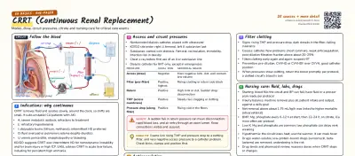
CRRT (Continuous Renal Replacement)Modes, dose, circuit pressures, citrate and nursing care for critical care examsChecked Oct 2026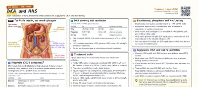
DKA and HHS2024 consensus criteria, treatment order, potassium, euglycemic DKA and monitoring26 questionsChecked Oct 2026- Endocrine EmergenciesThyroid storm, myxedema coma, adrenal crisis, and SIADH vs salt wasting vs DI15 questionsChecked Oct 2026
- Blood Products and TransfusionComponents, triggers, compatibility, reactions, massive transfusion, reversal19 questionsChecked Oct 2026
- Bleeding, Reversal, HIT and DICAnticoagulant reversal, the 4Ts and HIT care, DIC and TTP for critical care examsChecked Oct 2026
- DIC (Disseminated Intravascular Coagulation)Triggers, clot-then-bleed physiology, labs and the ISTH score, blood products, heparin and nursing careChecked Nov 2026
- Oncologic EmergenciesNeutropenic fever, tumor lysis, hypercalcemia, cord and SVC compression, leukemic crises, CAR-T and checkpoint toxicity6 questionsChecked Oct 2026
- GI Bleeding, Liver Failure and PancreatitisUpper GI and variceal bleeding, encephalopathy, SBP, acute liver failure and pancreatitis27 questionsChecked Oct 2026
- Acute Abdomen and GI Surgical EmergenciesObstruction and NG decompression, ileus and Ogilvie, mesenteric ischemia, perforation, Whipple and bariatric leaks, dumping and Fournier gangrene32 questionsChecked Oct 2026
Neuro, Sedation & Toxicology
- Neuro: ICP and StrokeICP, herniation, EVD care, osmotics, GCS, stroke and seizures66 questionsChecked Nov 2026
- Subarachnoid HemorrhageAneurysmal SAH: diagnosis, grading, rebleeding, nimodipine, vasospasm and DCI, sodium and nursing care5 questionsChecked Oct 2026
- Meningitis and EncephalitisFirst-hour care, empiric antibiotics, dexamethasone, CT before LP, CSF patterns, HSV and autoimmune encephalitis, isolation and ICU complications14 questionsChecked Oct 2026
- Myasthenic Crisis and Guillain-Barré SyndromeNeuromuscular respiratory failure, NIV or intubation, IVIG and plasma exchange, crisis drugs and ICU care19 questionsChecked Oct 2026
- Sedation, Pain and Delirium ScalesRASS, CPOT, BPS, CAM-ICU, ICDSC, SAT/SBT, and PADIS 2018 with the 2025 update8 questionsChecked Oct 2026
- Toxidromes and AntidotesToxidromes, antidotes and decontamination for exam review70 questionsChecked Nov 2026
- Mental Health: Meds and CommunicationPsychotropic classes, serotonin syndrome vs NMS, therapeutic communication, suicide safety, restraints and alcohol withdrawal54 questionsChecked Oct 2026
- End of Life, Brain Death and Organ DonationFamily meetings, surrogates, code status, comfort-focused withdrawal, 2023 brain death criteria and donation26 questionsChecked Oct 2026
Trauma & Emergency
- Trauma: Primary and Secondary SurveyxABCDE priorities, hemorrhage control, shock classes, damage control resuscitation and chest injuries for trauma exams48 questionsChecked Nov 2026
- BurnsBurn depth, TBSA, fluid resuscitation, inhalation injury, special burns and ABA referral criteria for exam review28 questionsChecked Oct 2026
- Hypothermia, Heat Stroke and DrowningSwiss staging, rewarming and hypothermic arrest, cooling heat stroke, drowning and frostbite for emergency and critical care exams30 questionsChecked Nov 2026
- ED Triage and ESIESI v5, resources, high-risk vital signs, MCI triage and EMTALA for CEN review38 questionsChecked Oct 2026
- Spinal Motion RestrictionSelective SMR, technique, penetrating trauma, children and cord injury, for EMT, paramedic and CEN21 questionsChecked Oct 2026
- Mass Casualty Triage and Incident CommandSTART, JumpSTART, SALT, the 2021 field triage guideline, ICS and EMS MCI roles, hazmat zones, PPE, decon and refusal, for EMT, paramedic and CEN18 questionsChecked Nov 2026
- CEN: HEENT EmergenciesEye trauma and sudden vision loss, cornea, orbital infection, nosebleeds, ear and nose foreign bodies, teeth and jaw, facial fractures, deep neck infections69 questionsChecked Oct 2026
- CEN: Musculoskeletal and Wound EmergenciesCompartment syndrome, fractures and dislocations, crush and fat embolism, amputation, tetanus, bites, wound closure, soft-tissue infection and hot joints for the CEN69 questionsChecked Oct 2026
- Forensics, Abuse and Sexual Assault in the EDTrauma-informed interviewing, documentation, child and elder abuse, intimate partner violence and strangulation, trafficking, sexual assault care and prophylaxis, mandatory reporting53 questionsChecked Oct 2026
- CEN: Bites, Exposures and Wound CarePit viper and coral snake envenomation, which animal bites carry rabies risk, macaque B virus, community needlesticks, foreign bodies and fishhooks, diabetic foot punctures, fingertips and replantation, and what the Braden scale scores15 questionsChecked Oct 2026
- CEN Mental Health: Crisis, Suicide Risk, Eating Disorders and AbuseThe suicide screen and one-to-one observation, eating disorders and their medical dangers, panic look-alikes, crisis and acute stress, staff after a child's death, and abuse the ED must not miss25 questionsChecked Oct 2026
- CEN: ED Safety, Disaster and Toxic ExposuresFire evacuation, active shooter, workplace violence reporting, chlorine, phosgene and carbon monoxide, smallpox, Legionella, breath-hold blackout and evidence packaging20 questionsChecked Oct 2026
- CEN Adult Medical Pearls: Neuro, GI and Respiratory Look-alikesDrug-induced delirium, valproate hyperammonemia, myasthenia at the bedside, lumbar puncture care, antiplatelet head bleeds, open depressed fractures, meningococcal contacts in pregnancy, food impaction, acalculous cholecystitis, Grey Turner sign, sump tubes and pneumonia that hides20 questionsChecked Oct 2026
- CEN: Uterine Bleeding, Kidney Stones and Deep Neck InfectionsAcute heavy uterine bleeding, adolescents and von Willebrand disease, postmenopausal bleeding, the normal urinalysis and uric acid stones, Lemierre syndrome, descending mediastinitis, the pulsatile neck "abscess", drug-induced angle closure and the locked jaw17 questionsChecked Oct 2026
Skin & Wounds
Prehospital & Transport
- EMT: Soft-Tissue and Musculoskeletal TraumaBleeding control, impaled objects, eviscerations, amputations, splinting, traction splints, pelvic binders, crush and mechanism of injury8 questionsChecked Oct 2026
- Common EMS MedicationsClass, use, typical adult dose and key cautions for 21 prehospital drugs, with EMT-scope drugs markedChecked Nov 2026
- Prehospital Stroke and STEMIStroke and LVO screens, last known well, destination, 12-lead, STEMI times, and aspirin and nitro cautions for EMT and paramedicChecked Oct 2026
Maternity & Pediatrics
- Obstetric EmergenciesPPH, preeclampsia and eclampsia, late-pregnancy bleeding, delivery emergencies and maternal arrest36 questionsChecked Nov 2026
- CEN: Genitourinary, Gynecologic and Early-Pregnancy EmergenciesEctopic pregnancy and hCG logic, early pregnancy loss, Rh, hyperemesis, adnexal torsion, ruptured cyst, PID, the acute scrotum, priapism, Fournier gangrene, stones, retention and UTI53 questionsChecked Oct 2026
- Pediatric Assessment and EmergenciesPAT, vital signs, airway infections, febrile seizures, dehydration, arrest, choking and abuse46 questionsChecked Nov 2026
- CEN Pediatric Emergencies: Ingestions, GI, Head Injury and FracturesFebrile and jaundiced neonates, toddler ethanol and cannabis ingestions, swallowed coins, magnets and sharp objects, intussusception, volvulus, Hirschsprung enterocolitis, PECARN and return to play, stridor that is not croup, sickle cell fever, SCFE, growth-plate and toddler fractures39 questionsChecked Oct 2026
- Neonatal and Pediatric Respiratory CareNewborn lung disorders, NICU oxygen targets, CPAP and surfactant, oscillation, oxygenation index, tube and suction sizesChecked Nov 2026